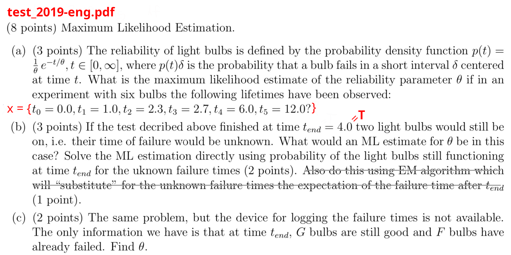
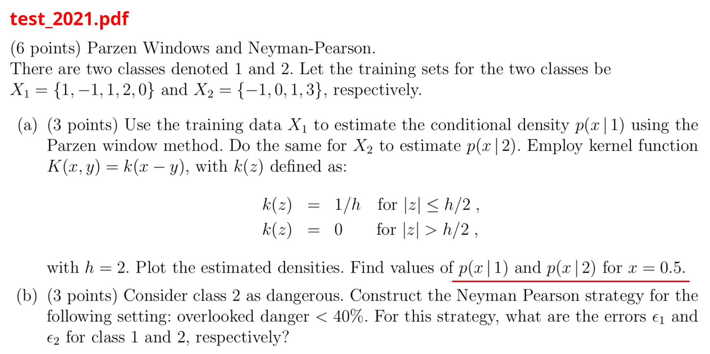
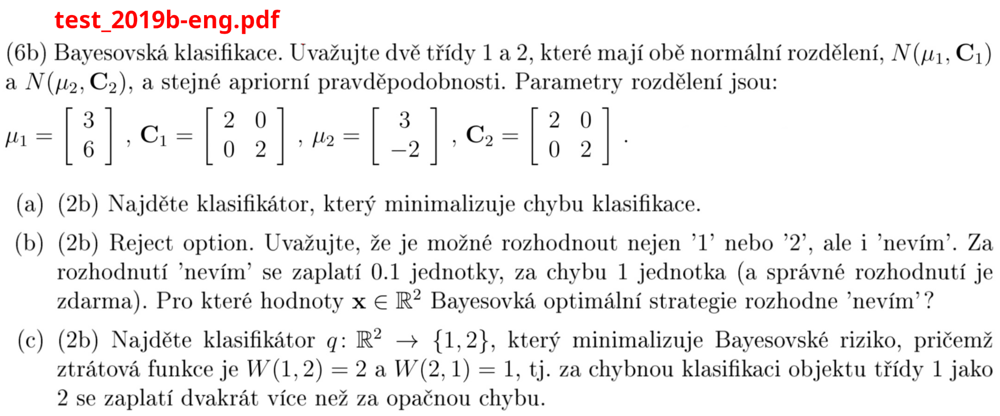
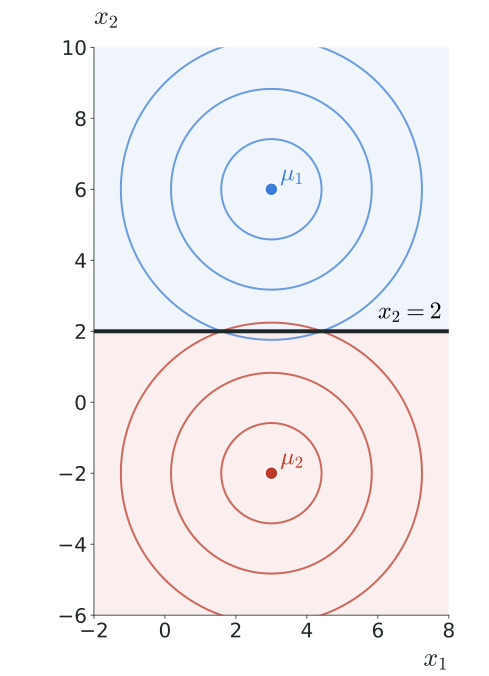
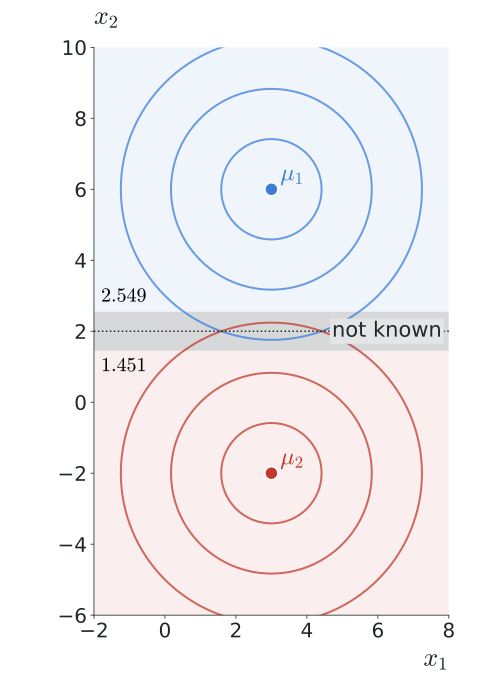
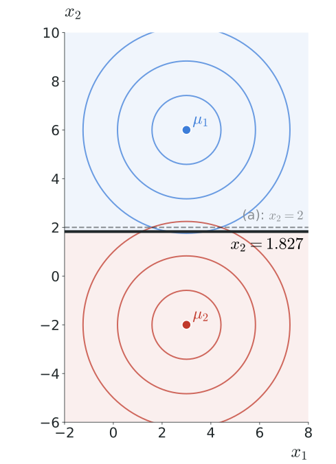

Pattern Recognition and Machine Learning, Lab 7
neoramic@fel.cvut.cz
6 November 2026
Three problems
All from previous tests.
Next week
test
Try each problem yourself first. Then click to reveal the results, Exercise 3 is solved step by step.


Even better: add a piece with \(\cr = 0.8\) and mass \(\cph(x \mid \ctwo) = 0.025\) to fill \(\etwo\) up to \(0.4\). There are infinitely many such pieces, e.g. \([2, 2.2)\) or \([-0.1, 0)\), all give \(\eone = 0.4 - 0.8 \cdot 0.025 = 0.38\): \[ \cq(x) = \begin{cases} \cone & 0 \le x < 2.2 \\ \ctwo & \text{otherwise} \end{cases} \qquad \eone = 0.38, \quad \etwo = 0.4 \]

Equal priors, decide by the log ratio of the likelihoods: \[ a(\cx) = \ln \frac{\cp(\cx \mid \cone)}{\cp(\cx \mid \ctwo)} = \frac{\|\cx - \mu_{\ctwo}\|^2 - \|\cx - \mu_{\cone}\|^2}{4} \]
The terms with \(x_1\) cancel: \[ a(\cx) = \frac{(x_2 + 2)^2 - (x_2 - 6)^2}{4} = 4 x_2 - 8 \]
\[ \cq(\cx) = \begin{cases} \cone & x_2 > 2 \\ \ctwo & x_2 \le 2 \end{cases} \]
A line halfway between the means.

Bayes with "not known" (Lab 3): decide the most probable class if \[ 1 - \max_{\ck} \cp(\ck \mid \cx) < 0.1 \quad\Leftrightarrow\quad \max_{\ck} \cp(\ck \mid \cx) > 0.9 \]
From (a): \(\cp(\cone \mid \cx) = \sigma(a(\cx))\) and \(\sigma(a) > 0.9 \Leftrightarrow a > \ln 9\) \[ \text{not known} \;\Leftrightarrow\; |4 x_2 - 8| < \ln 9 \;\Leftrightarrow\; |x_2 - 2| < 0.549 \]
\[ \cq(\cx) = \begin{cases} \cone & x_2 \ge 2.549 \\ \text{not known} & 1.451 < x_2 < 2.549 \\ \ctwo & x_2 \le 1.451 \end{cases} \]

Risk of each decision: \[ \begin{aligned} R(\cone \mid \cx) &= \cW(\ctwo, \cone)\, \cp(\ctwo \mid \cx) = \cp(\ctwo \mid \cx) \\ R(\ctwo \mid \cx) &= \cW(\cone, \ctwo)\, \cp(\cone \mid \cx) = 2\, \cp(\cone \mid \cx) \end{aligned} \]
Decide \(\cone\) if \[ \cp(\ctwo \mid \cx) < 2\, \cp(\cone \mid \cx) \;\Leftrightarrow\; a(\cx) > -\ln 2 \]
so \(\; x_2 > 2 - \frac{\ln 2}{4} \approx 1.827\)
\[ \cq(\cx) = \begin{cases} \cone & x_2 > 1.827 \\ \ctwo & x_2 \le 1.827 \end{cases} \]
An error on class \(\cone\) is expensive: the boundary moves towards \(\mu_{\ctwo}\).
